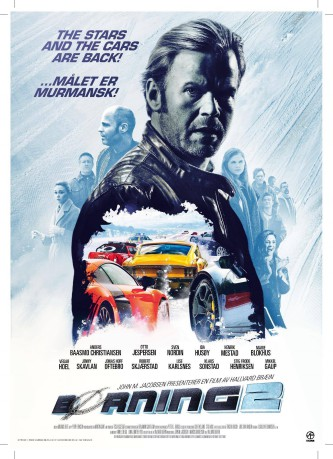

#9705 Burning 2 On Ice
Alternativ: Børning 2 (Originaltitel)
 
 IMDB-Wertung: 6.2 / 10
IMDB-Wertung: 6.2 / 10  Metascore: 0
Metascore: 0 
After two years in prison for participating in an illegal street race, Roy says no to a new illegal winter race from Bergen to Murmansk in the North of Russia. But then he hears that his daughter will participate with a boyfriend.
Jahr: 2016
Dauer: 97 Minuten
FSK: 12
Land: Norwegen Studio: Studio Hamburg EnterprisesTonspuren:
Untertitel: Deutsch,
Auflösung: 1080p (1920x800) Größe: 4618 MB
Genre: Action, Komödie
Regisseur: Hallvard Bræin
Drehbuch: Anne Elvedal, Christopher Grøndahl, Linn-Jeanethe Kyed
Soundtrack: Magnus Beite
Darsteller:
 Anders Baasmo Christiansen als Roy Gundersen
Anders Baasmo Christiansen als Roy Gundersen Vegar Hoel als Kayser
Vegar Hoel als Kayser Jenny Skavlan als Sylvia
Jenny Skavlan als Sylvia Stig Frode Henriksen als Petter'n
Stig Frode Henriksen als Petter'n- Otto Jespersen als Nybakken
 Arthur Berning als Kenneth
Arthur Berning als Kenneth- Ravdeep Singh Bajwa als Fabian
- Kristo Salminen als Antti
- Emil Lystvedt Berntsen als Tommy
- Lisa Uhlen Ryssevik als Thea
- Mikkel Gaup als Mikkel
- Fredrik Skogsrud als Tor Erik
- Henrik Mestad als Philip Mørk
- Jonas Hoff Oftebro als Charley
- Sven Nordin als Doffen
- Marie Blokhus als Ingrid Lykke
- Robert Skjærstad als Arne Roger
- Simon Norrthon als Stefan
- Anders Rydning als Paul
- Mats Mogeland als Fengselsbetjent
- Ida Husøy als Nina
- Lise Karlsnes als Madeleine
- Jade Francis Haj als Fredrik
- Geir Schau als Boccia-Geir
- Tori-Lena Eikanger als Gerd
- Thomas Ryste als Kjellen
- Frode Haarstad als Olsson
- Even Ørjasæter als Extra
Datei: X:\NEU\Burning 2 On Ice (2016, FSK12, 1920x800).mkv seit 09.10.2018
 Es gibt insgesamt 187 Filme in der Gruppe 'NEU'
Es gibt insgesamt 187 Filme in der Gruppe 'NEU'